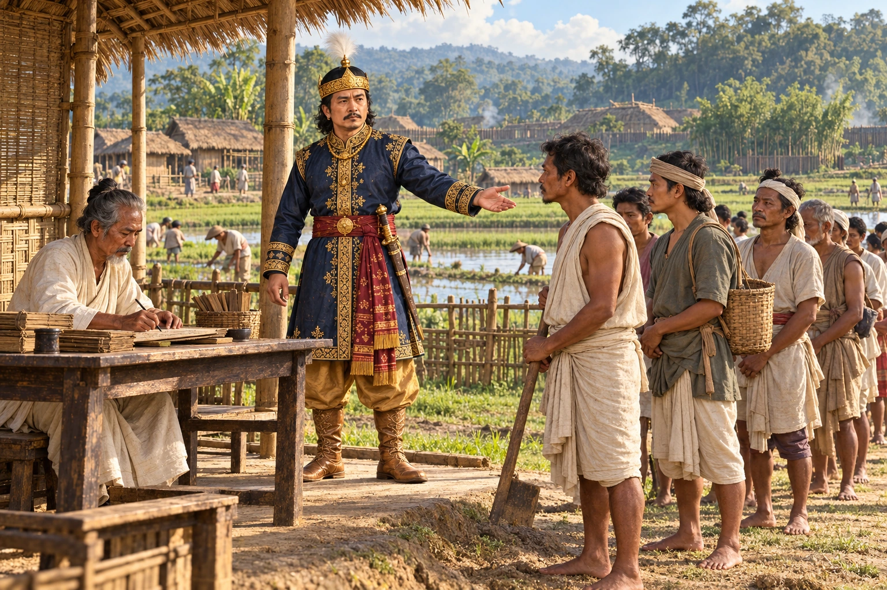

Suhungmung Orders the First Count of Fighting Men
1510 · Swarganarayan’s kingdom

Suhungmung orders the first recorded survey of the kingdom's adult men, the base of the later paik militia system.
The rural registration is illustrative; no fully developed later paik bureaucracy is implied.
People: Suhungmung (Swarganarayan)
Open this scene in the interactive archive · Follow this event on MAP